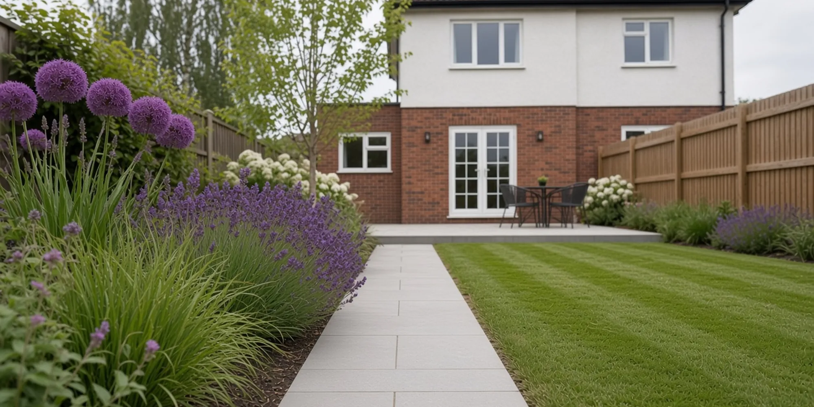
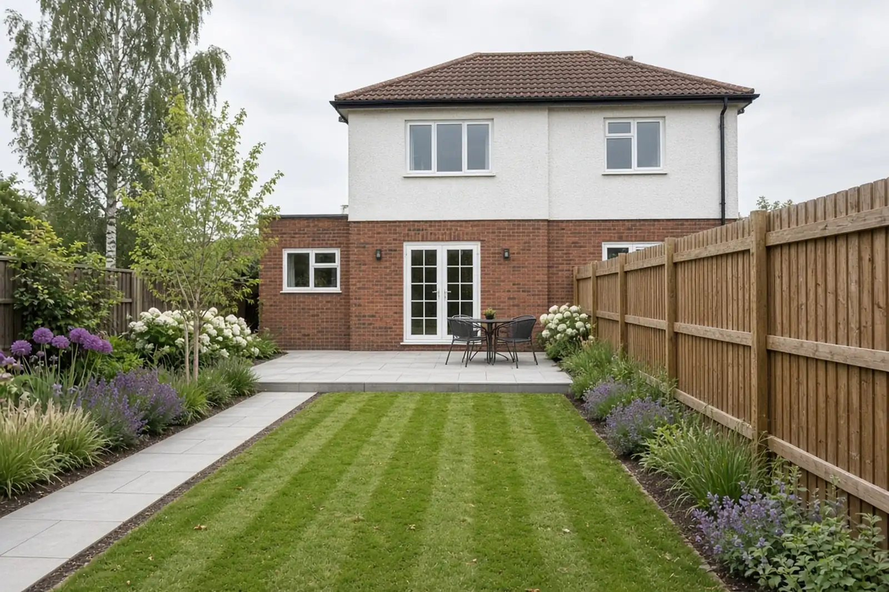
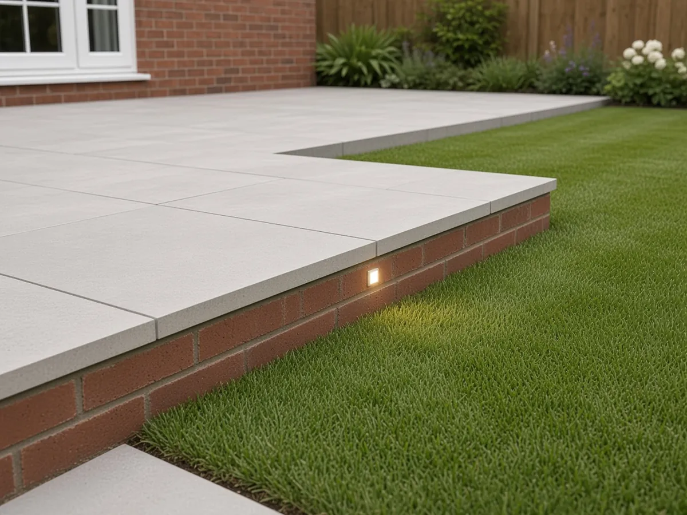
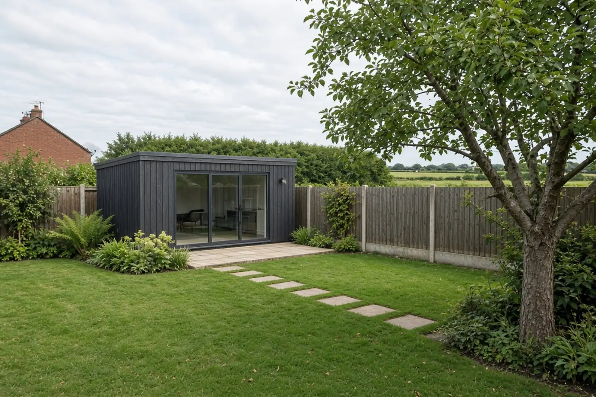
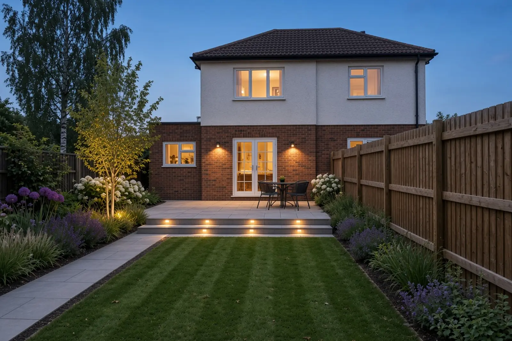
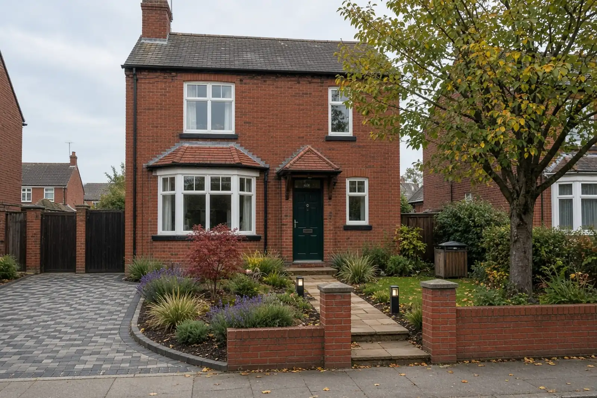
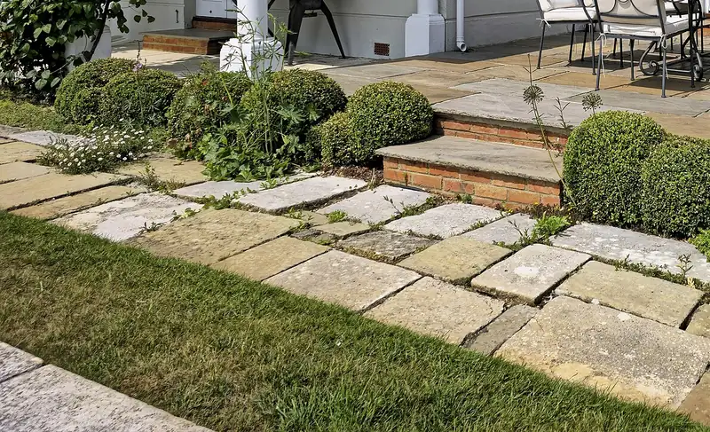
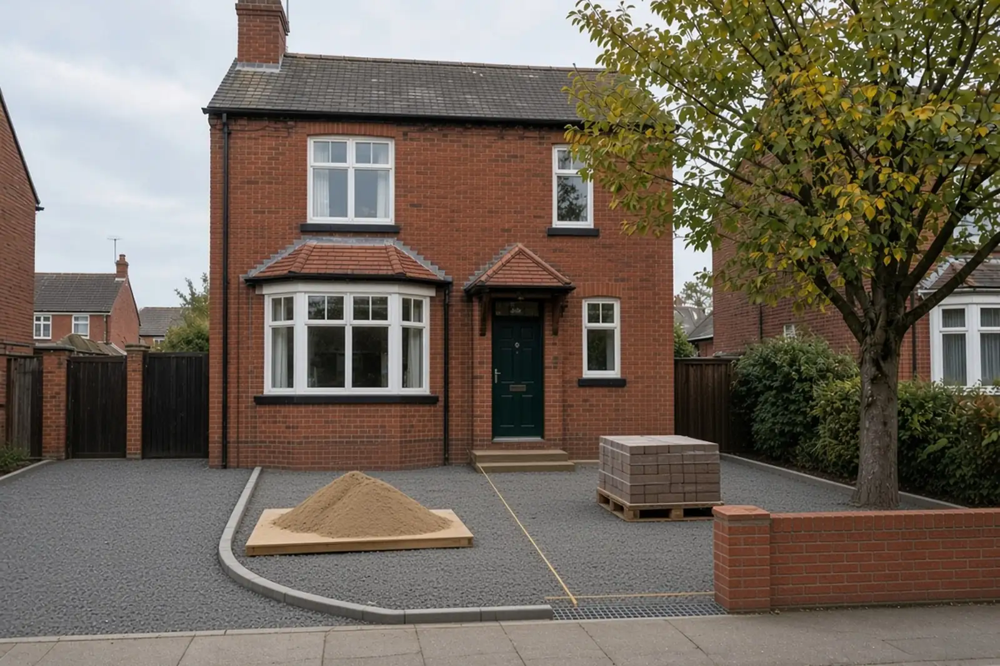
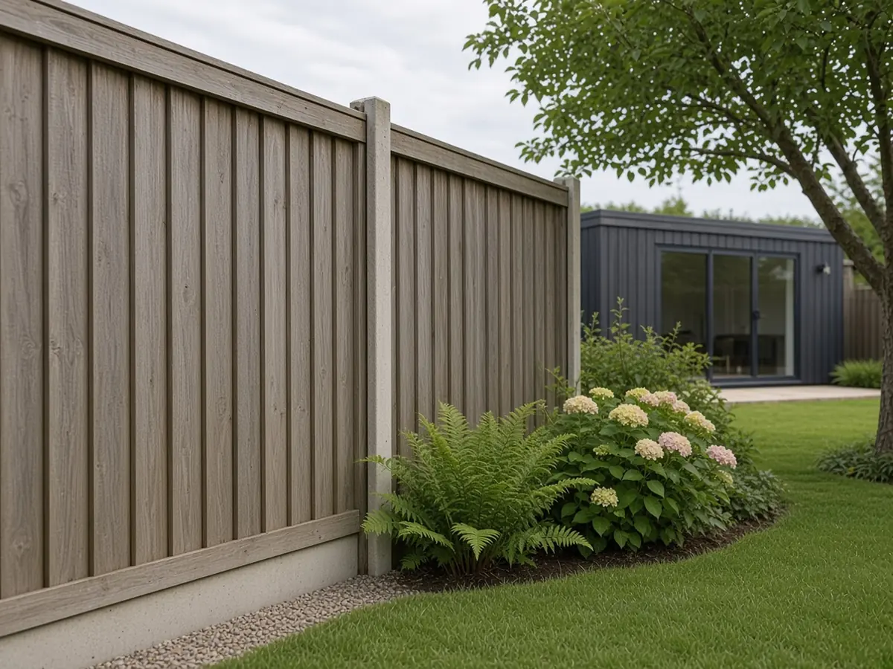
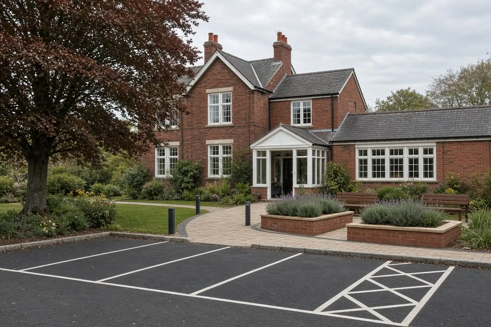

Stock photo
Stock photoBlock paving
Hard-wearing, lots of colours and patterns, and a section can be lifted and relaid if you ever need to get underneath.

IllustrativeServices
Design, planting, patios, garden rooms and light, with the groundwork and drainage done by the same crew. Pick a section, or just ring and tell us what you're thinking.

Illustrative01 Garden design and landscaping
We start with how you want to use the garden, then draw a simple plan: where the patio goes, the shape of the lawn, the borders, the paths and the light. Then the same people build it.
Not always. Some people want the whole garden planned, some just want the patio and the lawn sorted. We'll draw as much as the job needs.
We can, or you can. We'll suggest plants that cope with the soil, the light and how much time you want to spend on them.
Spring and autumn are easiest, because the ground stays damp. Most of the year works as long as it's watered.

Illustrative02 Patios, paths and walls
Porcelain and sandstone patios laid on a full bed with a gentle fall away from the house. Paths and steps that are easy underfoot. Low garden walls and raised beds in brick to match the house.
Away from the house, always. We set a gentle fall so rain runs off to the lawn, a border or a drain, never towards your walls.
Porcelain is very even and easy to keep clean. Sandstone has more variation and a softer look. Both last if they're laid on a proper base. We'll bring samples to the visit.
Often, yes, as long as it stays far enough below the damp course. We'll check the levels when we come out and explain what's possible.

Illustrative03 Garden rooms and structures
We build the base, the paving, the path and the garden around a garden room, a studio or a pergola. The room itself comes from a specialist supplier you choose. We make sure it sits level and looks like it belongs there.
Often not, but it depends on the size, the height and where it sits in the garden. It's worth checking with the council or the room supplier, and you can ask us about it on the quote.
It depends on the room. We follow the supplier's spec, usually a concrete base, and check it's level before anything goes on top.

Illustrative04 Outdoor lighting
Low wall lights, lights set into steps, path lights and a light under a tree. Planned with the garden, so the cables go in while the ground is open. A qualified electrician makes the connections.
Yes, though it's tidier and cheaper to plan it in while the ground is open. We'll look at what's possible on the visit.

Illustrative05 Driveways, as part of the garden
We design the drive with the path, the planting and the wall, so the front of the house doesn't end up looking like a car park. Block paving, resin or tarmac, on a base that stays level.
It depends on the finish and the weather. Block paving is usually ready straight away, resin and tarmac need a little longer. We'll tell you on the day, and put it in the handover message.
Sometimes. It can depend on the surface you choose and where the water runs off to. We'll talk it through, and for anything unusual we'll point you to the council to check.
Most sinking comes from a thin or badly compacted base. We dig out to a proper depth and compact in layers, which is slower, but it's the bit that lasts.
Stock photoHard-wearing, lots of colours and patterns, and a section can be lifted and relaid if you ever need to get underneath.
 Stock photo
Stock photoA smooth, even finish of small stones held in clear resin. Laid on the right base, water drains through it. It needs a dry spell to lay.

Stock photoFor paths, steps and edging, so the drive and the garden belong together. Tarmac suits long drives and slopes, finished with a neat edge.

Illustrative06 Groundworks and drainage
Digging out, levels, bases, footings for walls and garden rooms, and drainage: channel drains, connecting downpipes, and soakaways where the ground suits them. You don't see it when we've gone, which is the point.
It depends on your ground and where the water can go. Heavy clay round here doesn't always drain well. We'll look at it on the visit and explain the options. Ask about it on your quote.
We'd rather you didn't. Gas, water and electric can run where you don't expect them, so we check for buried services before we break ground.
Yes. We arrange muck away as part of the job so you're not left with a heap. It's in the quote.

Illustrative07 Fencing and gates
Close board, panels and slatted screens, on concrete or timber posts, with gravel boards to keep the timber off wet soil. Gates hung to swing and latch properly.
Your deeds usually say, and we can't tell from the garden. It's worth checking, and talking to your neighbour, before we start.
Concrete posts don't rot. Timber posts look softer and suit some gardens better. We'll go through both.

Illustrative08 Light commercial
Alongside gardens we take on a few small commercial jobs a year: shop and office frontages, care home and school grounds, and small staff or visitor car parks. Worked round your opening hours, to the same standard as a back garden.
Yes. We phase the work so the entrance stays usable, and agree the times with you before we start.
A word on prices. We don't put prices on the website because no two gardens are the same. You get a written quote after we've been to look.
Describe the garden, send a photo if you can, and we'll come and look.
Demo number. It rings nobody.